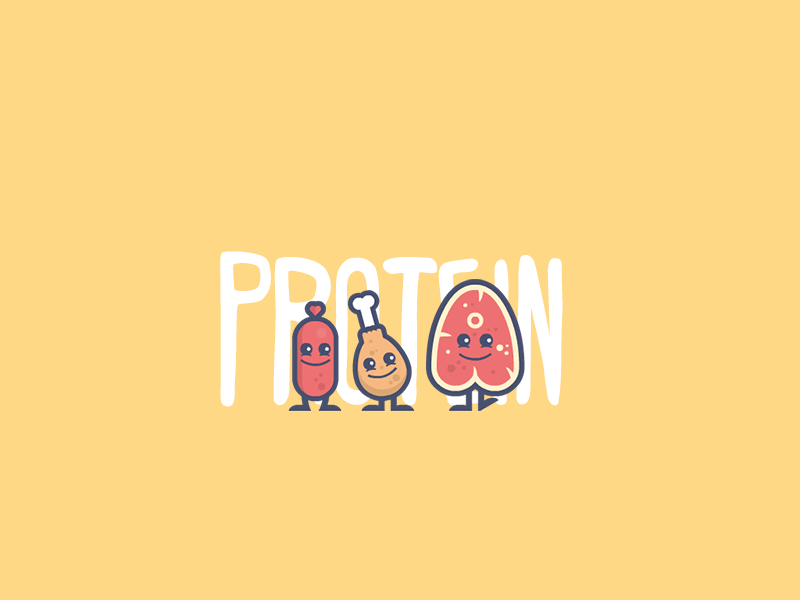

Having a balanced diet means eating foods from all main food groups in the right quantities. These food groups are:
- whole grains
- fruits
- vegetables
- protein
- dairy
- fats
The following sections discuss healthful choices from these food groups.
Whole grains
Whole grains are products made from the entire grain, which includes the germ and bran. In contrast, refined grains contain only part of the grain.
Whole grain foods have excellent health benefits. A meta-analysis from 2016 looked at 45 different studies, concluding that a high intake of whole grains helps protect against many health conditions, with benefits that include the following:
- a lower risk of heart disease
- a lower risk of cardiovascular disease
- a lower total cancer risk
- reduced all-cause mortality
Whole grain foods are high in fiber and are good sources of B vitamins and trace minerals, including iron, zinc, and magnesium. Grains lose much of their healthful properties if they have gone through a refining process.
Fruits and vegetables
Fruits and vegetables are rich in vitamins, minerals, and fiber. According to the American Heart Association (AHA), choosing a variety of colorful fruits and vegetables is the best way to get all the vitamins and minerals the body needs.
The AHA recommend filling half of the plate with fruit or vegetables for each meal, making up 4.5 cups of each per day. This quantity can include fresh, frozen, and canned varieties. For the most health benefits, people can check product labels and avoid canned, frozen, or dried products with high sodium or added sugars.
The Centers for Disease Control and Prevention (CDC) report that a diet high in fruits and vegetables can help with weight management programs. The CDC also link this type of diet with a lower risk of many conditions, including:
- heart disease
- stroke
- diabetes
- high blood pressure
- some cancers
Protein
 Protein is an important macronutrient that every cell in the body needs. It helps build and repair cells and body tissues, including the skin, hair, muscle, and bone. Protein is also important for blood clotting, immune system responses, hormones, and enzymes.
Many protein-rich foods also contain high levels of minerals, including iron, magnesium, and zinc.
Protein occurs in both animal and plant foods. Animal sources include meat, fish, and eggs. Beans, nuts, and soya are protein options for those following a vegan or vegetarian diet.A general guideline from the Food and Drug Administration (FDA) recommends that people get 50 grams (g) of protein per day on a 2,000 calorie diet. Individual protein needs will vary, however, depending on a person’s activity levels and weight. A healthful diet should include a range of protein foods.
Dairy
 Dairy products can be excellent sources of calcium. A calcium-rich diet promotes healthy bones and teeth.
Dairy products can be excellent sources of calcium. A calcium-rich diet promotes healthy bones and teeth.
According to the U.S. Department of Agriculture (USDA), the dairy food group contains:
- fluid milk products
- foods made from milk that retain their calcium content, such as yogurt and cheese
- calcium-fortified soymilk, or soy beverage
Milk-based foods that do not retain calcium, such as cream, cream cheese, and butter, are not part of this food group.The USDA suggest that people may need 2–3 cups of dairy products per day.
Fats
Fats are an essential part of a healthful diet. Fats are necessary for nervous system function, energy, absorption of certain vitamins, and for skin, hair, and joint health.
Fats occur in both animal and plant foods. There are several main types of fats, and some are more healthful than others:
Monosaturated and polyunsaturated fats are healthful fats that can boost heart health. Good sources include avocados, fish, nuts, seeds, and olives. Saturated fats and trans fats can raise total cholesterol and low-density lipoprotein (LDL) or “bad” cholesterol. LDL can increase the risk of heart disease. Saturated fats usually come from animal products, including cream, fatty meat, and fried foods. The FDA recommend that people get 78 g of fat per day in a 2,000 calorie diet. People should aim to get less than 10% of their daily calories from saturated fats.
Summary
Most healthful diets involve eating a variety of nutrient dense foods from all major food groups, including fruits, vegetables, whole grains, protein sources, and healthful fats.
Getting the right balance of sodium and potassium will help look after the heart, and cutting down on sodium-rich and processed foods can reduce the risk of chronic health conditions.
For best results, people are best to always follow a healthful diet alongside an active lifestyle.